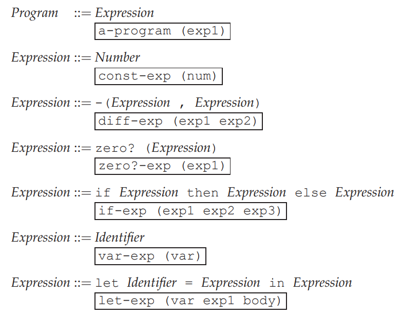
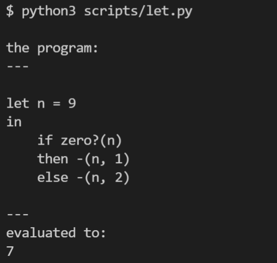

LET: A Simple Language¶
代码：let.py
EOPL 的第三章讲的是一个名为LET的语言，其语法如下：
该语言支持减法，谓词，分支， let 几种表达式, 实现后的语言运行效果如下：
词法分析¶
词法分析使用了python正则表达式的named group特性，写起来比较方便。
1 2 3 4 5 6 7 8 9 10 11 12 13 14 15 16 17 18 19 20 21 22 23 24 25 26 27 28 29 30 | def tokenize(text):
import re
token_pattern = r"""
(?P<ID>[a-zA-Z_][a-zA-Z0-9_?]*)
|(?P<NUMBER>-?[0-9]+)
|(?P<MINUS>-)
|(?P<EQUAL>=)
|(?P<LEFT_P>[(])
|(?P<RIGHT_P>[)])
|(?P<COMMA>[,])
|(?P<SPACE>\s+)
"""
token_re = re.compile(token_pattern, re.VERBOSE)
keywords = ['let', 'in', 'if', "then", "else", "zero?"]
pos = 0
while True:
m = token_re.match(text, pos)
if not m: break
pos = m.end()
tokname = m.lastgroup
tokvalue = m.group(tokname)
if tokname == "ID" and tokvalue in keywords:
yield Token(tokvalue.upper(), tokvalue)
elif tokname != "SPACE":
yield Token(tokname, tokvalue)
if pos != len(text):
raise TokenizerException('tokenizer stopped at pos %r of %r' % (
pos, len(text)))
|
语法分析¶
语法分析的目的是从token流中构造出一颗AST，这里使用的是递归下降算法。
1 2 3 4 5 6 7 8 9 10 11 12 13 14 15 16 17 18 19 20 21 22 23 24 25 26 27 28 29 30 31 32 33 34 35 36 37 38 39 40 41 42 43 44 45 46 47 48 49 50 51 52 53 54 55 56 57 58 59 60 61 62 63 64 65 66 67 | class Parser:
def __init__(self, lexer: Lexer):
self.lexer = lexer
def require(self, token_type):
token = self.lexer.next_token()
if token_type != token.type:
raise ParseException("require")
else:
return token
def parse(self):
token = self.lexer.current_token()
if token.type == "NUMBER":
return self.parse_number_exp()
elif token.type == "MINUS":
return self.parse_diff_exp()
elif token.type == "ZERO?":
return self.parse_zero_exp()
elif token.type == "IF":
return self.parse_if_exp()
elif token.type == "ID":
return self.parse_var_exp()
elif token.type == "LET":
return self.parse_let_exp()
def parse_number_exp(self):
token = self.require("NUMBER")
return ConstExp(int(token.value))
def parse_diff_exp(self):
self.require("MINUS")
self.require("LEFT_P")
exp1 = self.parse()
self.require("COMMA")
exp2 = self.parse()
self.require("RIGHT_P")
return DiffExp(exp1, exp2)
def parse_zero_exp(self):
self.require("ZERO?")
self.require("LEFT_P")
exp = self.parse()
self.require("RIGHT_P")
return IsZeroExp(exp)
def parse_if_exp(self):
self.require("IF")
exp1 = self.parse()
self.require("THEN")
exp2 = self.parse()
self.require("ELSE")
exp3 = self.parse()
return IFExp(exp1, exp2, exp3)
def parse_var_exp(self):
token = self.require("ID")
return VarExp(token.value)
def parse_let_exp(self):
self.require("LET")
id_token = self.require("ID")
self.require("EQUAL")
exp1 = self.parse()
self.require("IN")
body = self.parse()
return LetExp(id_token.value, exp1, body)
|
解释器¶
解释器的核心算法就是在AST上做后向遍历
1 2 3 4 5 6 7 8 9 10 11 12 13 14 15 16 17 18 19 20 21 22 23 | def evaluate(exp: Exp, env: Env) -> ExpVal:
if isinstance(exp, ConstExp):
return NumVal(exp.number)
if isinstance(exp, VarExp):
return env.apply(exp.name)
if isinstance(exp, DiffExp):
v1 = evaluate(exp.exp1, env)
v2 = evaluate(exp.exp2, env)
return NumVal(v1.to_num() - v2.to_num())
if isinstance(exp, IsZeroExp):
v1 = evaluate(exp.exp, env)
return BoolVal(v1.to_num() == 0)
if isinstance(exp, IFExp):
v1 = evaluate(exp.exp1, env)
if v1.to_bool():
v2 = evaluate(exp.exp2, env)
return v2
else:
v3 = evaluate(exp.exp3, env)
return v3
if isinstance(exp, LetExp):
v1 = evaluate(exp.exp1, env)
return evaluate(exp.body, ExtendEnv(exp.name, v1, env))
|
值得注意的是EOPL中将值分成了ExpVal和DenVal，在LET language中:
ExpVal = Int+Bool
DenVal = Int+Bool
这里的设计是很有意思的，比如为什么要专门定义ExpVal，我直接从evaluate里面返回python的int值， bool值不更方便吗？
如果这样做就混淆了元语言（mete language，这里指python） 和目标语言（object language 这里指LET）的值（value）了，在LET语言里面这种混淆看起来问题不大， 等后面加入了更多的语言特性之后你会发现不做区分不行。
明显这两个东西都是sumtype，在python里面就用继承来表达
1 2 3 4 5 6 7 8 9 10 11 12 13 14 15 16 17 18 19 20 21 22 23 24 25 | class ExpVal:
def to_num(self):
raise Exception("not num")
def to_bool(self):
raise Exception("not bool")
class NumVal(ExpVal):
def __init__(self, value):
self.value = value
def to_num(self):
return self.value
def __str__(self):
return str(self.value)
class BoolVal(ExpVal):
def __init__(self, value):
self.value = value
def to_bool(self):
return self.value
|
感受¶
纸上得来终觉浅，绝知此事要躬行。